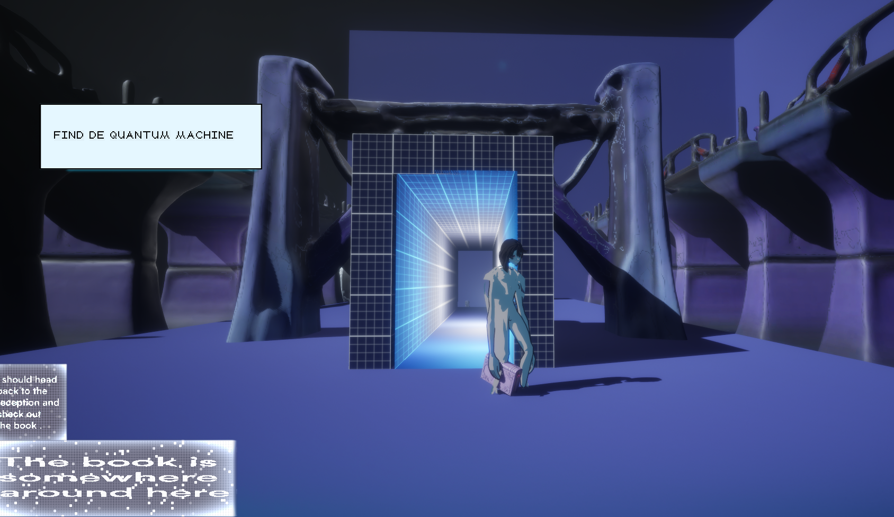
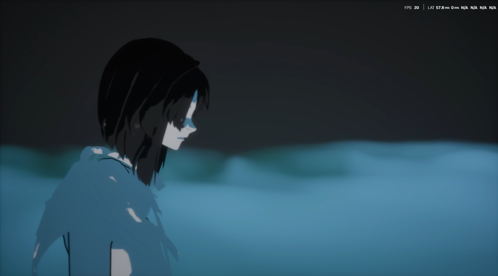

To the Best of Our Knowledge
What does it mean to exist in a world where every gesture can be turned into data?
To the Best of our knowledge Is an artistic exploration of video games in conjunction with quantum computing theories. World-building, first brought about by physicist Arthur Eddington in 1920 and now a common tool applied in game design, originates with the motivation to encourage the thinking out of hypothetical worlds with different physical laws. While the project explores the use of simulation in the game environment which embodies constraints of classical computing yet defies the laws of physics of the “real world”, the interest also lies in examining the capacity of dreaming speculative scenarios with quantum principles under the current technological advancements. The creative process is inspired by site visits at the Tabakalera Medialab and the quantum nanophotonics labs at the Ikerbasque Material Physics Center. Throughout Immaterial residency, In San sebastian, Vasc Country.
What does the future of data look like under the domination of AI? How will the knowledge of human civilisation inhabit itself? The game departs from testing a (dystopian) sci-fi narrative where the user follows a character on a mission to safekeep endangered man-made knowledge within a quantum space, insulated against the logic of space and time. To navigate the near-future implications of information production, preservation and loss, “ To the best of our knowledge” seeks to construct and make sense of an alternate reality negotiating between synthetic intelligence and spooky action at a distance, the existing and the unknown.
by Joaquina Salgado and Edy Fung.

About the Game
The narrative unfolds as the main character is assigned a mission: to find the last book ever written by human hands in a library where all knowledge is generated by AI. To safeguard this piece of human history, the character must navigate through endless bookshelves that generate themselves in real time.
The world’s structure is driven by a quantum random number used to generate procedurally the level. This number serves as the seed for the arrangement of the library’s blocks, meaning that as the character moves, the space reshapes itself in unpredictable ways.
The mission takes place in the dead of night, at precisely 3 a.m. The player has until 6 a.m. to complete it—before the AI entities begin their daily routine and the library becomes inaccessible.
Once the book is found, the character must attempt to check it out. But this is no simple task. To access to the next room, the player must trigger the lasers to to switch on quantum superposition and teleport to the Quantum Room—a non-Euclidean space where time and space are governed by quantum physics.
In this final stage, the player encounters the Quantum Machine, a device designed to preserve human knowledge forever by freezing a fragment of space and time. The game is won when the book is successfully deposited into the machine, securing its survival.
But what does survival really mean?
Humanity has entered into a recurrent loop. The words we write, the knowledge we consume—all are increasingly shaped by AI. A pertinent question to pose is what will happen when AI-written texts became the foundation for the training of AI.
The implications of this are profound: how will it affect the way we think? like humans eating and reflecting on themselves, in a cannibalistic act of ingesting knowledge that has already been endlessly processed by the machine.

